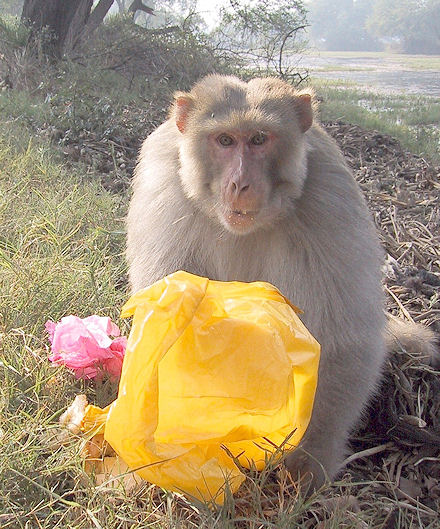
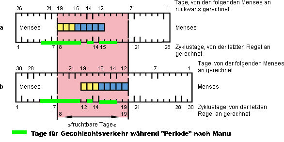
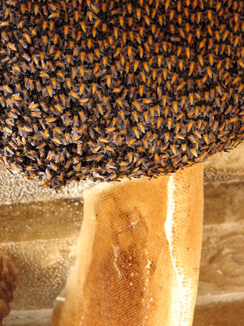
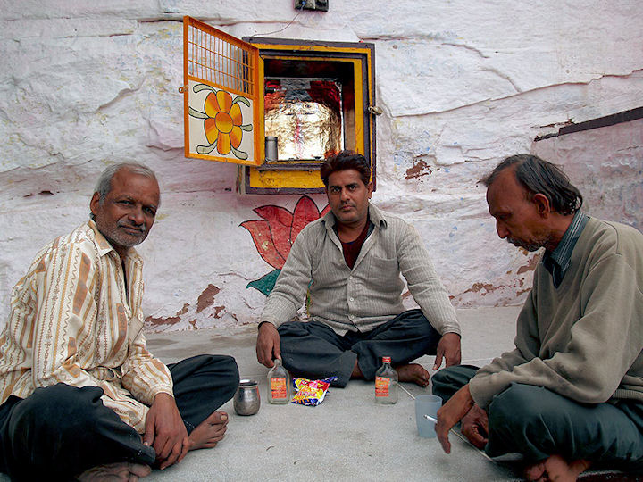
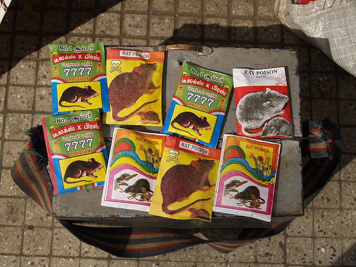
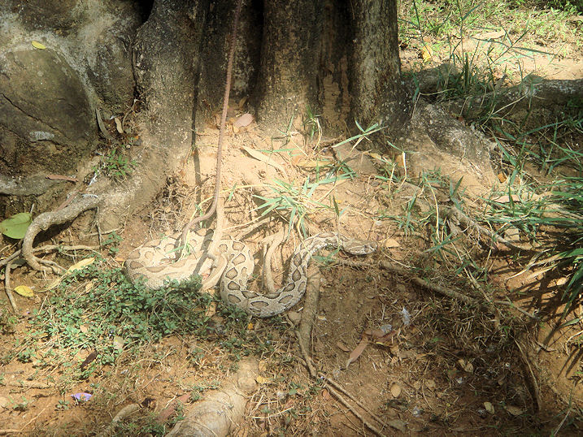

mailto:payer@payer.de
Zitierweise | cite as:
Payer, Alois <1944 - >: Sanskritkurs. -- 51. Lektion 51. -- Fassung vom 2009-01-26. -- URL: http://www.payer.de/sanskritkurs/lektion51.htm
Erstmals hier publiziert: 2009-01-14
Überarbeitungen: 2009-01-26 [Verebesserungen]
Anlass: Lehrveranstaltungen 1980 - 1984
©opyright: Dieser Text steht der Allgemeinheit zur Verfügung. Eine Verwertung in Publikationen, die über übliche Zitate hinausgeht, bedarf der ausdrücklichen Genehmigung des Verfassers
Dieser Text ist Teil der Abteilung Sanskrit von Tüpfli's Global Village Library
Falls Sie die diakritischen Zeichen nicht dargestellt bekommen, installieren Sie eine Schrift mit Diakritika wie z.B. Tahoma.
Die Devanāgarī-Zeichen sind in Unicode kodiert. Sie benötigen also eine Unicode-Devanāgarī-Schrift.
उपपद-Komposita (उपपद n. "Begleitwort")
sind तत्पुरुष mit einem Verbalnomen als Hinterglied, das nur als
Hinterglied von Komposita auftritt, nicht aber als selbständiges,
einzelnes Wort. उपपद werden mit den कृत्-Suffixen
gebildet. Sie sind Nomina agentis, d. h. sie bezeichnen einen Agens (कर्तृ), der die durch die zugrundeliegende Wurzel bezeichnete Handlung tut. Solche Komposita werden von den einheimischen Kommentatoren nicht durch Nominalkombinationen, sondern mittels Verbalformen aufgelöst: Beispiele:
|
Beispiele:
a) कृत्-Suffix -Ø
-नी 3 "führend" z.B. सेनानी m. "Heerführer" (सेना f. "Heer")
-भुज् 3 "genießend, essen" z.B. भूमिभुज् m. "König" (भूमि f. "Erde")
-विद् 3 "wissend" z.B. धर्मविद् 3 "den Dharma kennend"
Abb.: भूमिभुज्
ज्ञानेन्द्र वीर बिक्रम शाह,
नेपालस्यान्तिमो राजा (2001 - 2008)
[Bildquelle: kanjiroushi. --
http://www.flickr.com/photos/kanjiroushi/321594765/. -- Zugriff am
2009-01-13. --
Creative Commons Lizenz (Namensnennung)]
b) कृत्-Suffix -t
-कृत् 3 "machend" z. B.
कुलक्षयकृत् 3 "Vernichtung der Familie bewirkend"
पापकृत् 3 "Böses tuend, Übeltäter"
-जित् 3 "besiegend", z. B.
शत्रुजित् 3 "die Feinde besiegend"
पुरुजित् 3 "viele besiegend" (पुरु 3 "viel, reichlich")
-भृत् 3 "tragend" z. B. भूमिभृत् m. "König"

Abb.: पापकृत्
भरतपुर, राजस्थान
[Bildquelle: jeffmcneill. --
http://www.flickr.com/photos/jeffmcneill/83251043/. -- Zugriff am
2009-01-13. --
Creative Commons Lizenz (Namensnennung)]
c) कृत्-Suffix -a
-ग 3 "gehend (in, zu)" (vermutlich zur Wurzel gā, Tiefst. g + a) z.B. खग 3 "fliegend" m. "Vogel, Wandelstern" (ख n. "Loch, 'Luft'raum")
-घ्न 3 "erschlagend" z.B. कुलघ 3 "Familie(n) tötend"
-ज 3 (jña » jā » Tiefst. j + a) "abstammend von, geboren in" z.B. आत्मज "Sohn"
-ज्ञ 3 "kundig" (jñ-a) z.B. सर्वज्ञ 3 "allwissend"
-द 3 "gebend" (d-a) z.B. वारिद m. "Wolke" (वारि n. "Wasser")
-प 3 "trinkend" (p-a) z.B. द्विप m. "Elefant (zweimal trinkend)"
-प 3 "schützend" (p-a) z.B. भूप "die Erde schützend = König"
-स्थ 3 "stehend in, befindlich in" (sth-a) z.B. गृहस्थ m. "Haushalter, Hausvater"
-कर 3 "bewirkend, tuend" z.B. सुखकर 3 "Glück verschaffend"
-स्मर 3 "sich erinnernd" z.B. जातिस्मर 3 "sich früherer Geburten erinnernd"
Abb.: द्विपो द्विर्पिबति : हस्तेन च मुखेन च
नेपाल
[Bildquelle: amanderson2. --
http://www.flickr.com/photos/amanderson/2420198291/. -- Zugriff am
2009-01-13. --
Creative Commons Lizenz (Namensnennung)]
| Stämme, die auf einen einfachen Konsonanten
(außer Nasal, Halbvokal, -s) auslauten, haben keine Stammabstufung. Die
Deklination geschieht völlig regelmäßig durch Anfügung der regulären
Kasusendungen. Einzige Unregelmäßigkeit: im Nom.,Akk.,Vok.pl.Neutrum wird vor den Stammauslaut ein Nasal eingeschoben. |
Es gelten die üblichen
Lautveränderungsgesetze, d.h.
|
Beispiele:
शत्रुजित् 3 "Feinde besiegend"
Maskulinum, Femininum:
Singular:
Nom.Vok. शत्रुजित् (śatrujit + s)
Akk. शत्रुजितम्Plural:
Nom.Akk.Vok. शत्रुजितस्
Instr. शत्रुजिद्भिस्
Lok. शत्रुजित्सुNeutrum
Singular Nom.Akk.Vok. शत्रुजित्
Plural Nom.Akk.Vok. शत्रुजिन्ति
सुयुध् 3 "gut kämpfend"
Singular.Nom.Vok.m.f.n. सुयुत्
u.s.w.
Vollständige Paradigmen bei Kielhorn, Grammatik S. 16ff.
| Vor vokalisch anlautender Endung bleibt
der Auslaut des Stammes unverändert. Vor den übrigen Endungen gilt:
d. h.
|
Beispiele:
सत्यवाच् 3 "die Wahrheit redend" (बहुव्रीहि)
Maskulinum, Femininum:
Singular:
Nom.Vok. सत्यवाक्
Akk. सत्यवाचम्
Instr. सत्यवाचाPlural:
Instr. सत्यवाग्भिस्
Lok. सत्यवाक्षुNeutrum
Singular Nom.Akk.Vok. सत्यवाक्
Plural Nom.Akk.Vok. सत्यवाञ्चि
शेषभुज् 3 "Speisereste essend"
Maskulinum, Femininum:
Singular:
Nom.Vok. शेषभुक्
Akk. शेषभुजम्Plural:
Instr. शेषभुग्भिस्
Lok. शेषभुक्षुNeutrum
Singular Nom.Akk.Vok. शेषभुक्
Plural Nom.Akk.Vok. शेषभुञ्जि
परिव्राज् m. "Wandermönch"
Maskulinum, Femininum:
Singular:
Nom.Vok. परिव्राट्
Akk. परिव्राजम्Plural:
Instr. परिव्राड्भिस्
Lok. परिव्राट्सु
Abb.: परिव्राट्
पुष्कर
[Bildquelle: calamur. --
http://www.flickr.com/photos/gargi/360186369/. -- Zugriff am2009-01-13. --
Creative
Commons Lizenz (Namensnennung, keine kommerzielle Nutzung, keine
Bearbeitung)]
| Vor vokalisch anlautender Endung bleibt
das -h unverändert. Vor den übrigen Endungen
Nach diesen Ersetzungen wird der Stamm weiter behandelt, als ob er auf -ḍh, -gh bzw. -dh auslauten würde. Siehe die Paradigmen bei Kielhorn, Grammatik, S. 20f. |
Beispiele:
गुह् 3 "verbergend"
Maskulinum, Femininum:
Singular:
Nom.Vok. घुट् (Grassmannsches Hauchdissimilationsgesetz: गुढ् + s)
Akk. गुहम्Plural:
Instr. घुड्भिस्
Lok. घुट्सुद्रुह् "schädigend, hassend" (wahlweise -ḍh/-gh)
Maskulinum, Femininum:
Singular:
Nom.Vok. ध्रुट् । ध्रुक्
Akk. द्रुहम्Plural:
Instr. ध्रुड्भिस् । ध्रुग्भिस्
Lok. ध्रुट्सु । ध्रुक्षु
Vor anlautendem h- wird ein
vorausgehender Verschlusslaut durch den entsprechenden stimmhaften
Nichtaspiraten ersetzt und das anlautende h- durch den diesem
Verschlusslaut entsprechenden stimmhaften Aspiraten:
|
Anlautendes ch- wird nach kurzem Vokal,
nach मा "nicht" und nach आ "zu" durch cch- ersetzt:
|
Im Wortinnern wird -ch- nach allen
Vokalen durch -cch- ersetzt:
|
अजिन n.: Antilopenfell, bes. das Fell der schwarzen Antilope (Hirschziegenantilope : Antilope cervicapra L. ). Kam ursprünglich auf dem ganzen indischen Subkontinent vor von Punjab und Sind bis Bengalen und von Nepal bis Kanyakumari (Cape Comorin) (Tamil: கன்னியாகுமரி) Siehe:
Walker's mammals of the world / Ronald M. Nowak. -- 6. ed. -- Baltimore [u.a.] : Johns Hopkins Univ. Pr., 1999. -- 2 Bde. -- ISBN 0-8018-5789-9. -- Bd. 2. -- S. 1193f.
Abb.: Hirschziegenantilope -- Antilope
cervicapra L., Bock
[Bildquelle: Wikipedia, public domain]
अतिथि m.: Gast
अभ्यन्तर 3: im Inneren befindlich, nächster ; m. der nächste Angehörige, Eingeborener
अरण्य n.: Wildnis, Wald
ऋतु m.: periodischer Vorgang, Jahreszeit, Zeitabschnitt, Menstruation, Zeit, in der die Frau empfängnisbereit ist und ein Anrecht auf Beischlaf ihres Gatten hat.
Zu ऋतु siehe Manu III, 45-48: danach dauert ऋतु 16 Tage (nach der alternativen Übersetzung: 20 Tage) ab Beginn der Monatsblutung, an den ersten vier Tagen nach Beginn der Blutung ist Geschlechtsverkehr verboten (Nach der alternativen Übersetzung: an den ersten acht (4 + 4) Tagen), ebenso am 11. (bzw. 15.) und 13. (bzw. 18.) Tag. An geraden Tagen empfängt die Frau Söhne, an ungeraden Töchter. Für das Folgende wird ein ऋतु von insgesamt 16 Tagen (nicht die Alternativübersetzung) angenommen, wie es auch die meisten einheimischen Kommentare tun, und was also die vorherrschende Auffassung gewesen ist.
Da der Eisprung 14 Tage vor dem Beginn der Monatsblutung liegt, ist bei dieser Bestimmung der fruchtbaren Periode Fruchtbarkeit beinahe "garantiert" für einen Abstand der Monatsblutungen von 19 bis 30 Tagen. Die verbotenen Tage (11. und 13.) verbessern die Wahrscheinlichkeit für Geschlechtsverkehr am 12. und 14. Tag, d.h. die Empfängniswahrscheinlichkeit bei einem Zyklus von 28. Tagen (die Lebensdauer der Spermien in der Frau beträgt ca. 3 Tage). Diese Bestimmungen sind als sozusagen positiver Einsatz von Knaus-Ogino.

Abb.: "Graphische Darstellung für die Berechnung der fruchtbaren Tage nach OGINO bei 26- bis 30tägigen Zyklusintervallen; gelbe Kästchen: maximale Lebensdauer der Spermien; blaue Kästchen: »Ovulationstermin«; a) 26tägiges Zyklusintervall: fruchtbare Tage vom 8. bis 15. Zyklustag; b) 30tägiges Zyklusintervall: fruchtbare Tage vom 12. bis 19. Zyklustag. Der untenstehende Pfeil #(pfb) gibt die fruchtbaren Tage für Zyklusintervalle von 26 bis 30 Tagen an = 8. bis 19. Zyklustag" [Quelle für Text und Bild: Roche Lexikon Medizin. -- 4.Auflage. -- München : Urban & Fischer Verlag, ©1984. -- Online: http://www.gesundheit.de/roche/ro20000/r20172.html. -- Zugriff am 2003-12-16]
एकत्र Adv.: an einer Stelle
जटा f.: Haarflechte (Haartracht des Asketen)
Abb.: जटा
ऋषिकेश
[Bildquelle: EyalNow. --
http://www.flickr.com/photos/eyalnow/351734123/. -- Zugriff am 2009-01-13.
-- Creative
Commons Lizenz (Namensnennung, keine kommerzielle Nutzung, share alike)]
तुल्य 3: gleich, vergleichbar (तृतीयया)
तरय 3 (f.: तरयी): dreifältig, aus drei Teilen bestehend
प्राणान्तिक 3 (f.: -ī): tödlich, todbringend, lebenslänglich
बाह्य 3: außerhalb, draußen befindlich, fremd
भिक्षा f.: erbetteltes Almosen, Bettelspeise
मार्यादा f.: Grenze
शिष् 7P शिनष्टि : verlassen, übriglassen
Perf.II शिशेषे, शिशिषुर्
Fut. शेक्ष्यति
Pass. शिष्यते
Kaus. शेषयति
PPPशिष्ट
Absol. -शिष्य
शिष् + वि 7P विशिनष्टि : unterscheiden
Pass. विशिष्यते : sich unterscheiden von (पञ्चम्या, तृतीयया), besser sein als (पञ्चम्या, तृतीयया), der beste sein unter (षष्ठ्या, सप्तम्या)
समान 3: gleichartig, gleich, ähnlich ; m.: Altersgenosse
स्व 3: eigen, sein (mein, dein etc.) Wird wie सर्व dekliniert. Im Abl.Lok.sg.m.n und im Nom.pl.m kann es auch wie देव dekliniert werden:
Abl.sg.m.n स्वस्मात् । स्वात्
Lok.sg.m.n. स्वस्मिन् । स्वे
Nom.pl.m स्वे । स्वास्
गर्ह् 1Ā गर्हते 10P गर्हयति : schelten, tadeln
Perf I जगर्हे
Fut. गर्हिष्यते
PPP गर्हित
पिशित n.: (zubereitetes) Fleisch
Abb.: पिशितम्
Kolkata = কলকাতা
[Bildquelle: nicolas - نِيقُولاَوُسَ. --
http://www.flickr.com/photos/keep-on-moving/2994878670/. -- Zugriff am
2009-01-13. --
Creative
Commons Lizenz (Namensnennung, keine kommerzielle Nutzung, share alike)]
उपहार m.: Darbringung, Opfer, Geschenk
मधु n.: Honig, Süßtrank, Met (Honigwein)

Abb.: मधु
City Palace, उदयपुर
[Bildquelle: abrinsky. --
http://www.flickr.com/photos/abrinsky/457940260/. -- Zugriff am 2009-01-13.
-- Creative
Commons Lizenz (Namensnennung, keine kommerzielle Nutzung, share alike)]
मांस n.: Fleisch
मृगया f.: Jagd
Abb.: मृगया
Jagd mit चीता (Acinonyx
jubatus venaticus) Gujarat =
ગુજરાત,
1812
[Bildquelle: Wikipedia. Public domain]
शिवा f.: (weibl.) Schakal (Goldschakal = Canis aureus)
Abb.: शिवा (Weibchen?)
Canis aureus, Kalatop Khajjiar Sanctuary
[Bildquelle: gautamnguitar. --
http://www.flickr.com/photos/gautamnguitar/2181211040/. -- Zugriff am
2009-01-13. --
Creative
Commons Lizenz (Namensnennung, keine kommerzielle Nutzung, keine
Bearbeitung)]
रुत n.: Geschrei
कौशिक m.: Eule
Abb.: कौशिकः
Brahma-Kauz (Athene brama), Mahesana = મહેસાણા
[Bildquelle: Umang Dutt. --
http://www.flickr.com/photos/snapflickr/2790757825/. -- Zugriff am
2009-01-13. --
Creative
Commons Lizenz (Namensnennung, keine kommerzielle Nutzung, keine
Bearbeitung)]
शकुनि m.: Vogel
श्वन् m.: Hund
starker Stamm श्वान्
schwacher Stamm vor Vokal सुन्
schwacher Stamm vor Konsonant श्व
Abb.: श्वा लिङ्गं च
Karnataka = ಕರ್ನಾಟಕ
[Bildquelle: mattlogelin. --
http://www.flickr.com/photos/mattlogelin/150316450/. -- Zugriff am
2009-01-13. --
Creative Commons Lizenz (Namensnennung, keine kommerzielle Nutzung)]
परिचित 3: vertraut, bekannt
अटवी f.: Wald
शून्य 3: leer, öde
आपान(क) n.: Zechgelage

Abb.: आपानकम्
जोधपुर
"These men were sitting and drinking in front of sanctuary of some hindu god (I forgot the name). As they told me they were butchers and it was god of their profession who accepted sacrifices of alcohol only."
[Quelle von Bild und Text: zz77. -- http://www.flickr.com/photos/zz77/2255585927/. -- Zugriff am 2009-01-13. -- Creative Commons Lizenz (Namensnennung, keine kommerzielle Nutzung, keine Bearbeitung)]
क्रूर 3: roh, grausam
दिह् 2U देग्धि, दिग्धे : bestreichen, beschmieren
Perf. II दिदेह
Fut. धेक्ष्यति
Pass. दिह्यते
Kaus. देहयति
PPP दिग्ध
विष n.: Gift

Abb.: मूषिकाविषाणि (मूषिका f. Maus, Ratte)
Bangalore = ಬೆಂಗಳೂರು
[Bildquelle: mattlogelin. --
http://www.flickr.com/photos/mattlogelin/387955362/. -- Zugriff am
2009-01-13. --
Creative Commons Lizenz (Namensnennung, keine kommerzielle Nutzung)]
भुजंग m.: Schlange

Abb.: भुजंगः
Kettenviper (Daboia russelii), Bangalore = ಬೆಂಗಳೂರು
[Bildquelle: teemus. --
http://www.flickr.com/photos/teemus/455664680/. -- Zugriff am 2009-01-13. --
Creative
Commons Lizenz (Namensnennung, keine kommerzielle Nutzung, share alike)]
सायक m.: Pfeil
उत्साद m.: Zugrundegehen
कलत्र Neutrum: Ehefrau, Weibchen
बन्दी f.: Gefangene, Raub
योषित् f.: junge Frau, Mädchen
शार्दूल m. = व्याघ्र m.
रुधिर n.: Blut
अर्चन n. अर्चना f. = पूजा f.
बलि m.: Abgabe, Spende, Tribut
मणि m.: Juwel
Abb.: मणिः
Hope Diamond aus Guntur = గుంటూరు, heute Smithsonian Museum of
Natural History, Washington DC
[Bildquelle: David Bjorgen / Wikipedia. GNU FDLicense]
वन n.: Wald
मद m.: auch "Brunstsaft" eines Elefanten (im Musht)
Abb.: मदः
[Bildquelle: muzina_shanghai. --
http://www.flickr.com/photos/muzina_shanghai/2408592293/. -- Zugriff am
2009-01-13. --
Creative
Commons Lizenz (Namensnennung, keine kommerzielle Nutzung, share alike)]
राग m.: auch: Farbe, rote Farbe
कालन n.: Wald
खन् 1U खनति : graben
Perf. चखान, चखने
Fut. खनिष्यति
Kaus. खानयति
PPP खात
Absol खनित्वा । खात्वा
चिन्त् 10 चिन्तयति : denken, nachdenken
शबर .: Eigenname eines nichtarischen Stammes
१. कौटिलीयार्थशास्त्र १, ३, ९ - १२ आश्रमधर्मः
गृहस्तस्य
स्वधर्माजीवस्तुल्यैरसमानार्षिभिर्वैवाह्यमृतुगामित्वं देवपित्रातिथिपूजा भृत्येषु
त्यागः शेषभोजनं च ।९।
ब्रह्मचारिणः स्वाध्यायो ऽग्निकार्याभिषेकौ
भैक्षाव्रतित्वमाचार्ये प्राणान्तिकी वृत्तिस्तदभावे गुरुपुत्रे सब्रह्मचारिणि वा
।१०।
वानप्रस्थस्य ब्रह्मचर्यं भूमौ शय्या जाटाजिनधारणमग्निहोत्राभिषेकौ
देवतापित्रतिथिपूजा वन्यश्चाहारः ।११।
प्रव्राजकस्य जितेन्द्रियत्वमनारम्भो निष्किंचनत्वं सङ्गत्यागो
भैक्षाव्रतमनेकत्रारण्ये च वासो बाह्याभ्यन्तरं च शौचम् ॥१२॥
Erklärung: -अभिषेकौ Nom.Akk.Vok.Dual.mask. (Dualdvandva)
२. कौटिलीयार्थशास्त्र १, ३, १६ - १७ Über die Notwendigkeit des Achtens auf den वर्नाश्रमधर्म
तस्मात्स्वधर्मं भूतानाम्
राजा न व्यभिचारयेत् ।स्
स्वधर्मं संदधानो हि
प्रेत्य चेह च नन्दति ॥१६॥
व्यवस्थितार्यमर्यादः
कृतवर्णाश्रमस्थितिः ।
त्रय्याभिरक्षितो लोकः
प्रसीदति न सीदति ॥१७॥
३. बाण (7. Jhdt. n. Chr.): कादम्बरी ed. K.P. Parab, 1896, S. 65ff.: Überlegungen des Papagei वैशम्पायन über das Jägerdasein:
आसीच्च मे मनसि -- अहो मोहप्रायमेतेषां जीवितं साधुजनगर्हितं च चरितम् । तथा हि । पुरुषपिशितोपहारे धर्मबुद्धिः , अहारः साधुजनगर्हितो मधुमांसादिः , श्रमो मृगया , शास्त्रं शिवारुतम् , समुपदेष्टारः सद्सतां कौशिकाः , प्रज्ञा शकुनिज्ञानम् , परिचिताः श्वानः , राज्यं शून्यास्वटवीषु , आपानकमुत्सवः , मित्राणि क्रुरकर्मसाधनानि धनूंषि , सहाया विषदिग्धमुखा भुजंगा इव सायकाः , गीतमुत्सादकारि मुग्धमृगाणाम् , कलत्राणि बन्दीगृहीताः परयोषितः , क्रूरात्मभिः शार्दूलैः सह संवासः , पशुरुधिरेण देवतार्चनम् , मांसेन बलिकर्म , चौर्येण जीवनम् , भूषणानि भुजंगमणयः , वनकरिमदैरङ्गरागः , यस्मिन्नेव कानने निवसन्ति तदेवोत्ख्यातमूलमशेषतः कुर्वत इति चिन्तयत्येव मयि शबरसेनापतिः समुपाविशत् ॥
४. Kommentar des भानुचन्द्र (16. Jhdt.) zu vorhergehendem Abschnit der कादम्बरी (diese Übung sollte unter Anleitung eines Lehrers übersetzt werden. Ist ein solcher nicht verfügbar, kann man sie übergehen)
आसीच्चेति । मे मम मनसि चित्त आसीद्बभूव । खेद इति शेषः । तदेव दर्शयति -- अहो इत्यादिना । अहो इत्याश्चर्ये । एतेषां भिल्लानां जीवितं प्राणितं मोहो ऽज्ञानं प्रायं प्रचुरं यत्र तादृशम् । चः पुनरर्थे । चरितमाचरणं साधुजनैः सज्जनजनैर्गर्हितं निन्दितम् । तदेव विशेषतो दर्शयति -- तथा हीति । पुरुषेति । पुरुषस्य पुंसो यत्पिशितं मांसं तस्य य उपहारो भगवत्यै नैवेद्यदर्शनं तस्मिन्धर्मबुद्धिः श्रेयोधीः । आहार इति । आहारः प्रत्यवसानं साधुजनैर्गर्हितो निन्दितो मधुमांसादिर्मधुः मद्यं माक्षिकं वा । मांसं प्रतीतम् । ते आदौ यस्येति बहुव्रीहिः । आदिशब्दात्कन्दादिपरिग्रहः । श्रम इति । श्रमः शक्तिसाधनायासो मृगयाखेटकः । शास्त्रमिति । शिवा सृगाली तस्य रुतं शब्दितं शास्त्रमुच्चस्वरवेदपाठः । प्रबोधजनकत्वसाम्यात्तदुपमानम् । सदिति । सदसतां शुभाशुभानां समुपदेष्टारो बोधकाः कौशिका उलूकाः । प्रज्ञेति । शकुनयः पत्त्रिणस्तेषां स्थूलमहत्त्वादिना ज्ञानं तदेव प्रज्ञा विवेकबुद्धिः । परीति । श्वानः सारमेयाः परिचिता विश्वासपालत्राणि । राज्यमिति । शून्यासु जनरहितासु विन्ध्याटवीषु राज्यं स्वामित्वम् । आपानकेति । उत्सवः संतुष्टिकार्यं तदेवापानमेवापानकम् । स्वार्थे कः । पानगोष्ठिका । मित्राणीति । क्रूरं यत्कर्म तत्साधनानि तद्धेतुभूतानि धनूंष्येव चापान्येव मित्राणि सहृदः । हितचिन्तकानीति यावत् । सहाया इति । विषेण दिग्धं मुखमाननं येषामेवंविधाः सायका बाणास्त एव सहाया इष्टकार्यकर्तृत्वात्साहाय्यकारिणः । क इव । भुजंगाः सर्पा इव । एतेषां विषदिग्धमुखत्वं स्वाभाविकम् । तेषामौपाधिकमिति भावः । गीतमिति । मुग्धा अनभिज्ञा ये मृगा हरिणास्तेषामुत्साहकारि स्तब्धताविधायि गीतं गानम् । कलत्रेति । परयोषितो ऽन्यस्त्रिय एव बन्दी ग्रहकस्तद्रूपत्वेन गृहीताः स्त्रीकृताः कलत्राणि स्वपत्न्यः । क्रूरेति । क्रूरात्मभिर्दुष्टात्मभिः शार्दुलैश्चित्रकैः समं संवासः सहावस्थानम् । पश्वेति । पशवो महिषास्तेषां रुधिरेण रक्तेन देवतार्चनं देवपूजनम् । मांसेनेति । मांसेन पिशितेन बलिर्हन्तकरस्तत्कर्म तत्कृत्यम् । चौर्येणेति । चौर्येण परद्रव्यापहारेण जीवनं प्राणधारणम् । भूषणनीति । भूषणान्याभरणानि भुजंगमणयः सर्परत्नानि । पर्वतवासित्वात्तेषां ते सुलभा इति भावः । वनेति । वनकरिणामरण्यहस्तिनां मदैर्दानवारिभिरङ्गरागो विलेपनम् । यस्मिन्निति । अनिर्दिष्टनामनि कानने वने निवसन्ति निवासं कुर्वन्ति तदेव काननमशेषतः समग्रत उत्खातमुत्पाटितं मूलं मध्यभागो यस्यैवंभूतं कुर्वते विदधत इति पूर्वोक्तप्रकारेण मयि चन्तयति ध्यायति सत्येव ... ॥
Zu Lektion 52